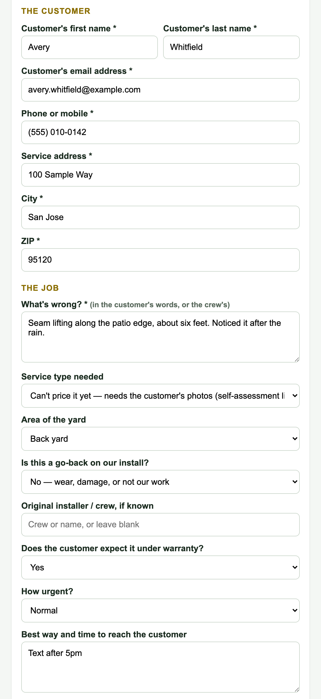

The rest of the form

What's wrong goes in the customer's own words. The email and phone are where their link goes, so read them back.

The gold box is the service department's: a price now if it is known, and whether photos are needed. Add Gate / access notes for the crew. Choose how the customer wants their link: Both (email and text) is the default, and if one is missing it uses what exists and press Create the service ticket. The ticket page opens, assigned to the service manager, and service@ gets an email.